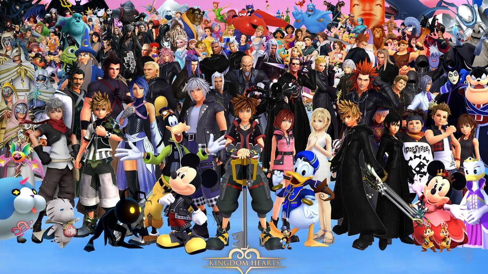

Personajes

Personajes
Sora es el protagonista de la saga Kingdom Hearts, así como un portador de la Llave Espada. Es un joven optimista y muy consciente de la importancia de su aventura. Posee un fuerte sentido de justicia y un corazón implacable.
Goofy es un caballero de la corte real del Castillo Disney. No le gustan las armas a pesar del cargo que ocupa y prefiere el diálogo antes que luchar. Tras la marcha del Rey Mickey, fue junto a Donald en busca del portador de la Llave Espada, Sora.
El Pato Donald es el mago de la corte. Él y Goofy están encargados por el Rey Mickey de buscar una "llave" que les permitiría librar al mundo de los Sincorazón. Así es como conocen a Sora, con el que se aliarán para librar al mundo de los Sincorazón.
Sombra es un Sincorazón Purasangre que ha aparecido en todas las entregas de la saga Kingdom Hearts, incluyendo el manga. Si bien no son el tipo más débil de Sincorazón, sí son los más básicos y sólo pueden ser derrotados con una Llave Espada. Se lucha contra ellos en todos los mundos de todos los juegos, exceptuando el mundo de Atlántica.
El Maestro Xehanort es uno de los personajes principales que aparecen en el juego Kingdom Hearts Birth by Sleep. Es uno de los grandes Maestros de la Llave Espada que quedan vivos y el antagonista principal de la entrega y de la serie. Se introdujo en el cuerpo de Terra consiguiendo su control, pero perdió sus recuerdos al final de la historia de Birth by Sleep.
Ansem, el Buscador de la Oscuridad es el sincorazón de Xehanort nacido a partir de Terra-Xehanort, muy similar al incorpóreo de éste. Es el principal antagonista de Kingdom Hearts y el líder supremo de los sincorazón, es el más poderoso e inteligente de su clase. Tiene el control total sobre la oscuridad y la puede utilizar en todo su potencial.